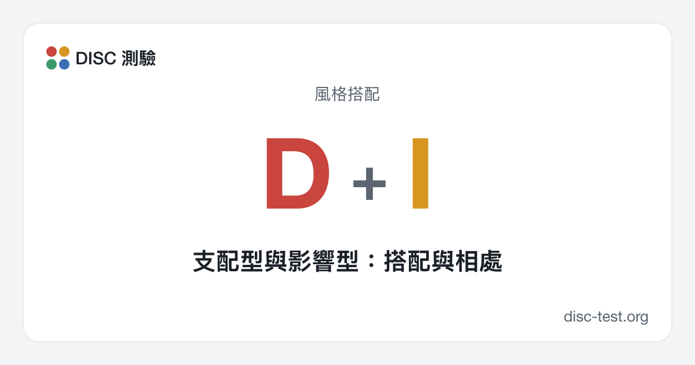

支配型與影響型：搭配與相處
最有活力的一組：D 訂下目標和節奏，I 感染身邊的人。兩人一起能把專案推動起來，但容易低估細節和必要的謹慎。
D 和 I 同樣是快節奏：兩人都邊做邊決定，喜歡挑戰，受不了例行公事。差別在關注點：D 想的是結果，I 想的是人和印象。這是很好的互補：D 提供方向和魄力，I 提供人脈、氣氛和推銷想法的本事。摩擦出現在 D 把 I 的健談當成浪費時間、而 I 覺得 D 冷漠又生硬的時候。兩人都要記得：在這股衝勁的背後，總得有人盯著細節。

如何合作
共同點
- 節奏快，不必長時間準備就敢動手
- 樂觀，喜歡新的任務
- 都不喜歡例行公事和事事被盯著
容易產生摩擦的地方
- D 要求講具體，I 卻聊到忘了正事
- I 被生硬的話刺傷，D 被情緒化弄得不耐煩
- 兩人都把時程估得太樂觀，也漏掉了細節
給支配型（D）的建議
- 一開口先花兩分鐘關心對方，然後再談正事
- 明確肯定 I 的貢獻，這對 I 來說就是動力
- 別在半路打斷對方的點子，先讓對方說完，再來篩選
給影響型（I）的建議
- 和 D 說話要簡短：結果、期限、需要對方做什麼
- 把約定寫下來，別讓熱情和事實對不上
- 別把 D 的直接當成針對你，那是風格，不是評價
主管 D，部屬 I
主管 D 給部屬 I 定下目標、等著看成果，得到的是活力、人脈和快速反應。但 I 很難忍受乾巴巴的指令和得不到肯定：主管 D 應該當面、公開地稱讚，並交給 I 需要在人前表現的任務。細節和回報最好在過程中隨時確認，而不是等到最後。
主管 I，部屬 D
主管 I 用想法打動部屬 D，並給 D 充分的自由，D 很看重這一點。摩擦出現在目標隨著新點子不斷改變的時候：D 受不了朝令夕改。主管 I 應該把優先順序定下來，沒有理由就不改；D 則應該私下提出不同意見，而不是當著團隊爭論。
開會時與書面溝通中
開會時，D 和 I 是聲音最大的兩個人：D 推著大家做決定，I 則把話題帶向點子和人。兩人聯手，能很快把一個想法「賣」給其他人。書面溝通中，D 寫得簡短，I 寫得熱情又詳細；D 可能覺得 I 的信空洞，I 可能覺得 D 的信生硬。
典型衝突與化解方法
典型的衝突：I 向客戶承諾的超出了團隊做得到的範圍，D 最後一個知道，當場發火。要討論的不是「誰的錯」，而是規則：任何關於期限的承諾，都要先和負責執行的人商量。D 同時要記住：當眾的嚴厲，在 I 看來就是背叛。
工作之外：友情、感情、家庭
工作之外，D 和 I 是鮮明、活躍的一對：旅行、聚會、新計畫。兩人都愛行動，都不喜歡無聊。風險在於搶奪關注和衝動決定；需要有一個人負責預算和行事曆。
這一組的三條規則
- 關於期限的承諾，一定要先商量再給
- 當面表達肯定：對 I 是動力，對 D 是尊重
- 談完之後立刻把決定寫下來
其他風格組合
DD D + DDS 支配型 + 穩健型DC 支配型 + 謹慎型II I + IIS 影響型 + 穩健型IC 影響型 + 謹慎型SS S + SSC 穩健型 + 謹慎型CC C + C